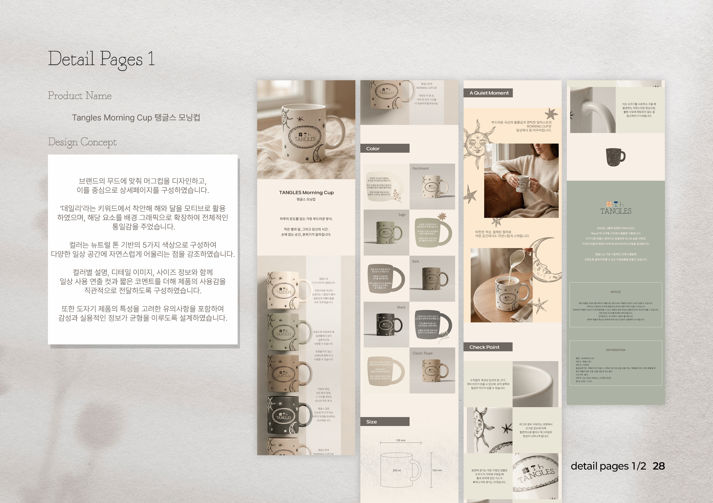
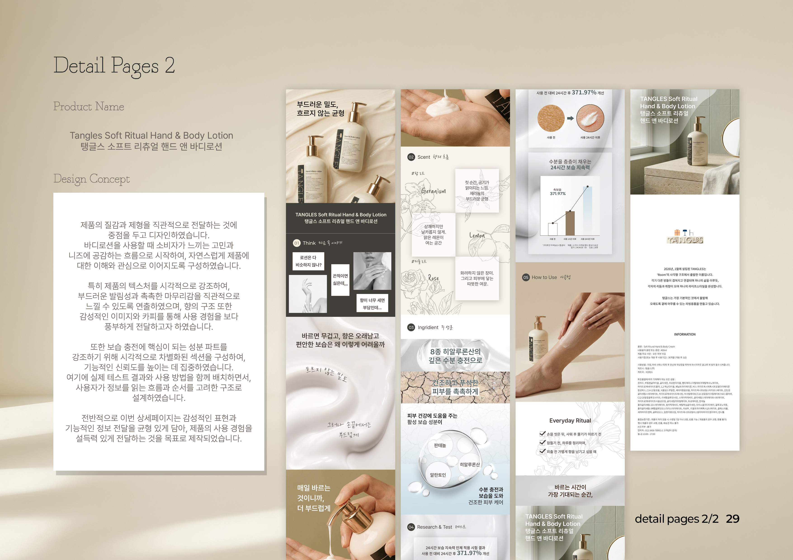
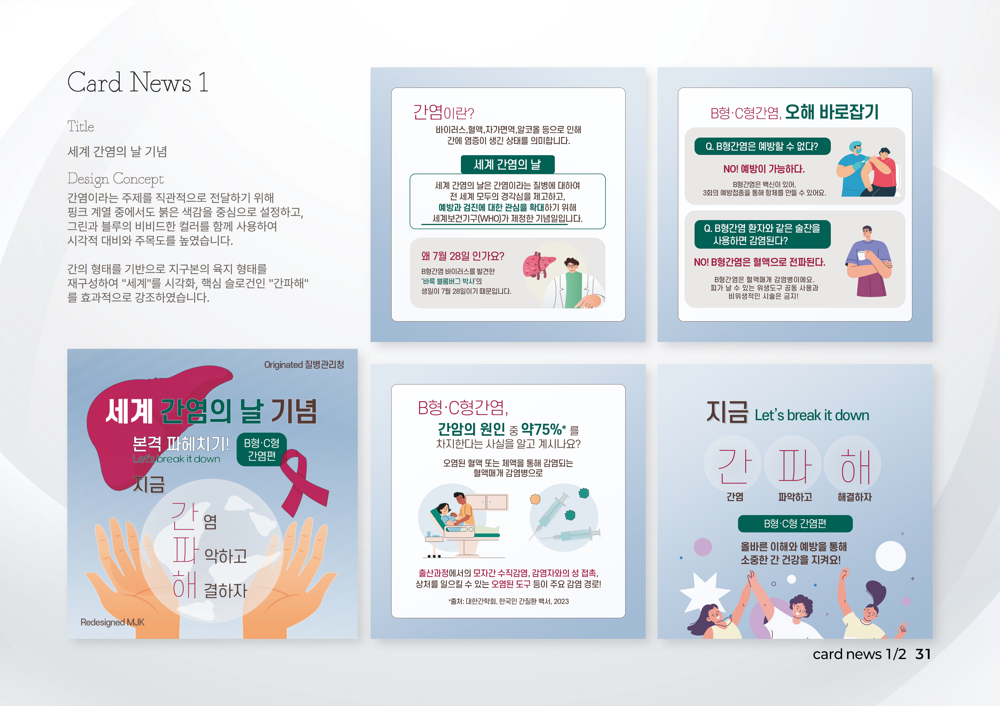
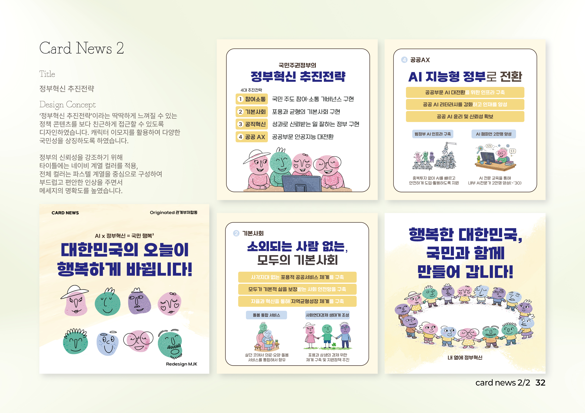

Brand Website
Tangles
브랜드의 첫 인상이 전달되는 메인 화면부터 제품 소개, 콘텐츠 연결, 사용자 흐름까지 하나의 무드 안에서 정리한 프로젝트입니다.
화면마다 톤이 끊기지 않도록 구조를 설계하고, 사용자가 자연스럽게 브랜드를 이해할 수 있도록 정보 위계와 시선 흐름을 정리했습니다.
정적인 이미지에서 끝나지 않고, 움직임과 리듬을 더해 브랜드 메시지가 더 직관적으로 전달되도록 구성했습니다. 짧은 영상 안에서도 시선의 흐름과 분위기 전달을 중요하게 생각합니다.
브랜드 홈페이지는 단순한 정보 전달이 아니라 브랜드의 인상과 사용 경험을 함께 설계하는 작업이라고 생각합니다. 컨셉 설정부터 화면 흐름, 비주얼 톤, 사용자 시선 이동까지 고려해 작업했습니다.
브랜드의 첫 인상이 전달되는 메인 화면부터 제품 소개, 콘텐츠 연결, 사용자 흐름까지 하나의 무드 안에서 정리한 프로젝트입니다.
화면마다 톤이 끊기지 않도록 구조를 설계하고, 사용자가 자연스럽게 브랜드를 이해할 수 있도록 정보 위계와 시선 흐름을 정리했습니다.

기존 사이트를 분석하고 UX 흐름과 비주얼 톤을 개선한 리디자인 프로젝트입니다. 모바일 반응형을 기준으로 설계하여 다양한 화면에서도 일관된 경험을 제공합니다.
Claude, Chat GPT 등 AI 툴을 적극 활용하여 디자인 리서치 및 콘텐츠 구조를 효율적으로 구성했습니다.
제품은 단순히 보기 좋은 형태보다 브랜드가 지향하는 분위기와 사용 장면까지 함께 담아야 한다고 생각합니다. 재질감, 컬러, 실루엣이 하나의 인상으로 읽히도록 구성했습니다.


SNS 디자인은 제한된 화면 안에서 핵심 메시지를 빠르게 전달하면서도 브랜드의 인상을 유지해야 하는 작업이라고 생각합니다. 텍스트 위계와 시선 유도, 첫인상이 남는 구성을 중심으로 작업했습니다.


브랜드와 제품, 콘텐츠를 하나의 흐름으로 설계하는 디자이너가 되고자 합니다.
작업 문의는 이메일 또는 인스타그램을 통해 연락 부탁드립니다.